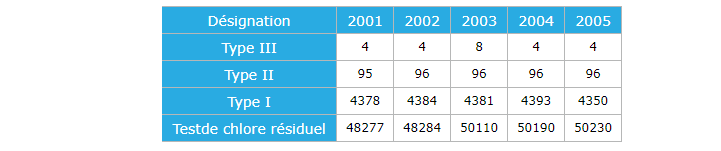

Espace Technique
Economie de l'eau
Actions réalisées
Actions réalisées :
Les actions entreprises par la RAMSA pour lutter contre les pertes d’eau et améliorer le rendement du réseau sont diverses. Elles touchent aussi bien les aspects curatifs que préventifs et concernent principalement :
- La poursuite et l’intensification du programme de mise en place des systèmes de modulation de pression (stabilisateurs de pression aval + modulation). En effet, comme le montre le graphique ci-après la technique de modulation de pression a permis de réaliser des gains considérables sur les débits nocturnes et par conséquent sur les débits de fuites dans les secteurs équipés de ces systèmes.
- L’extension de l’activité d’externalisation de la recherche et réparation de fuites sur plusieurs secteurs hydrauliques (Dcheira, Tarrast, Jorf, Jihadia, Charaf, Aourir) en adoptant une démarche basée sur le maintien du gain en volume d’eau réalisé sur chaque secteur.
- La réhabilitation et renouvellement du réseau vétuste (branchements et réseau)
- La poursuite avec un rythme plus soutenu de l’opération de changement des compteurs vétustes (13531 en 2010);
- Le démarrage d’un programme de changement des compteurs de contrôle mécaniques par des débitmètres autonomes liés au centre de télégestion permettant ainsi un suivi rigoureux et en temps réel des débits nocturnes des secteurs hydrauliques;
- La normalisation de la pression dans les secteurs hydrauliques par :
- Le basculement de certains secteurs alimentés par les adductions ONEP vers l'étage Tassila 75
- L'installation de stabilisateurs de pression à l'entrée des secteurs où des valeurs excessives de pression sont enregistrées,
- Le suivi quotidien des gros consommateurs.
Qualité de l'eau
Le contrôle de la qualité de l'eau potable est assurée à trois niveaux:
- système de production ONEP
- Système distribution RAMSA
- Ministère de la santé (service d'hygiène)
Statistiques
© RAMSA
Realisation 2019